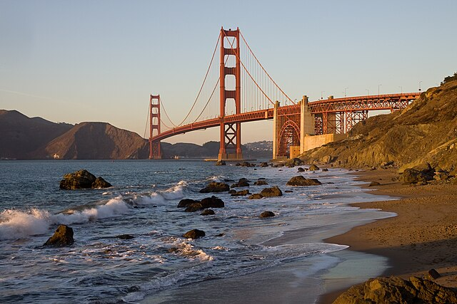

This is a helpful website that you can use to plan a holiday! It will tell you about different countries - which food they eat and what landmarks are worth visiting!
A country located in central Europe, perfect for a flower-filled spring or a traditional, festive Christmas.
Germany - Roman Eisele - Wikimedia Commons - CC BY SA
A small country in South-East Asia, the list never runs out for things to do and it is an amazing tropical retreat.
Singapore - Basil Morin - Wikimedia Commons - CC BY SA
A country near Europe, England is part of the United Kingdom, and is a mixture of historical and modern.

England - Mick Lobb - Image from Geograph.co.org - Wikimedia Commons - CC BY SA
A state on the west coast of America, California is a huge place, full of cities, and warm all-year round.
California - Christian Mehlführer (Chmehl) - Wikimedia Commons - CC BY
Located in the Pacific Ocean, Rarotonga is a lovely island filled with welcoming and cheerful people.
Rarotonga - Mr Bullitt - Wikimedia Commons - CC BY